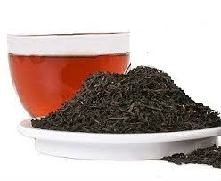
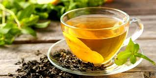
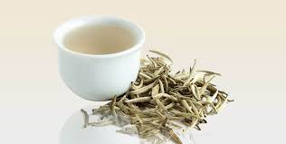

"Nothing soothes your throat like a hot cup of tea."
Discovering many different types of flavours of tea, you enjoy the delightful experience of its own.
From Rich and Bold Black teas to Light and Fruity White teas. There are so many different types that
it's impossible not to find the one that suits your taste.
| Types Of Teas | Tea Images | Description |
|---|---|---|
| Black Tea |  |
The most flavorful of teas, black teas are oxidized for longer
Stated Benefits: Several studies have found that black tea
Caffeine, yes? Yeah, but normally a bit less |
| Green Tea |  |
This traditional Chinese tea is made from leaves that are not
Stated Benefits: Higher appetite, reduced cholestoerol, and Caffeine, yes? Yes, around half a cup of coffee. |
| White Tea |  |
It is produced from the same plant that produces black and green tea,
Stated Benefits: Less studied than black or green tea, but some Caffeine, yes? Yes, but generally less than black tea. |